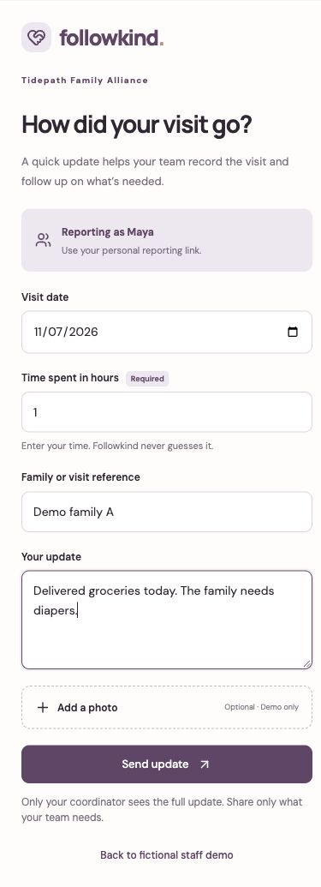
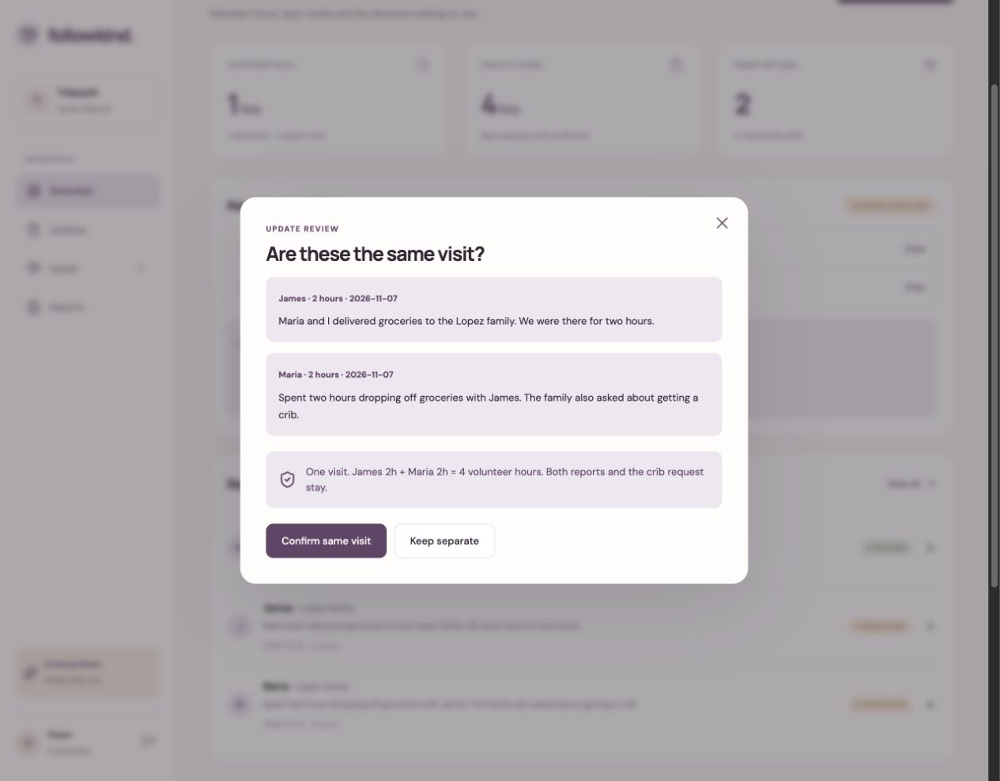
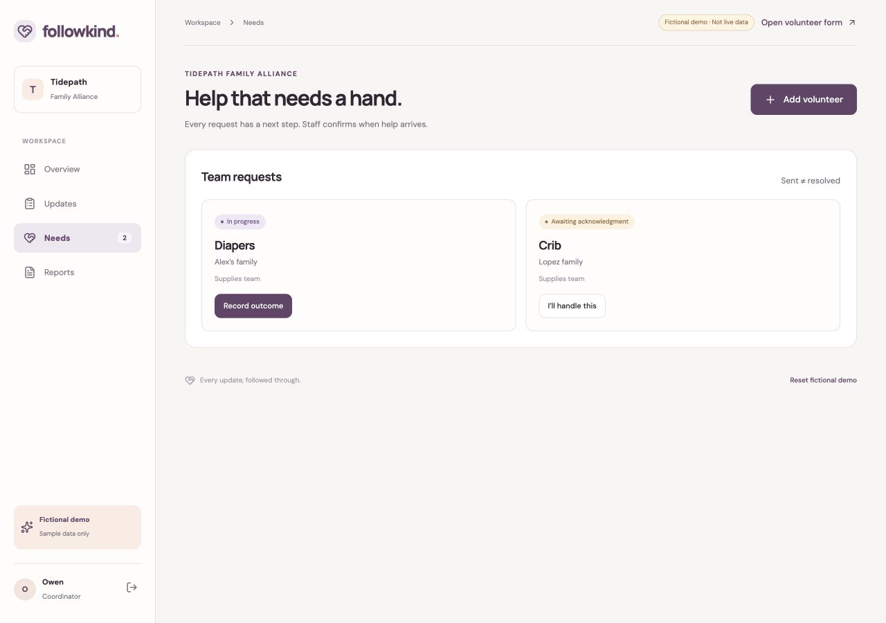
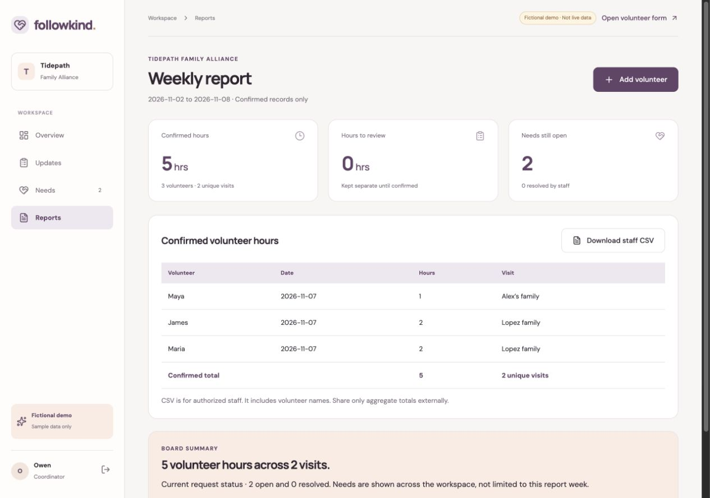
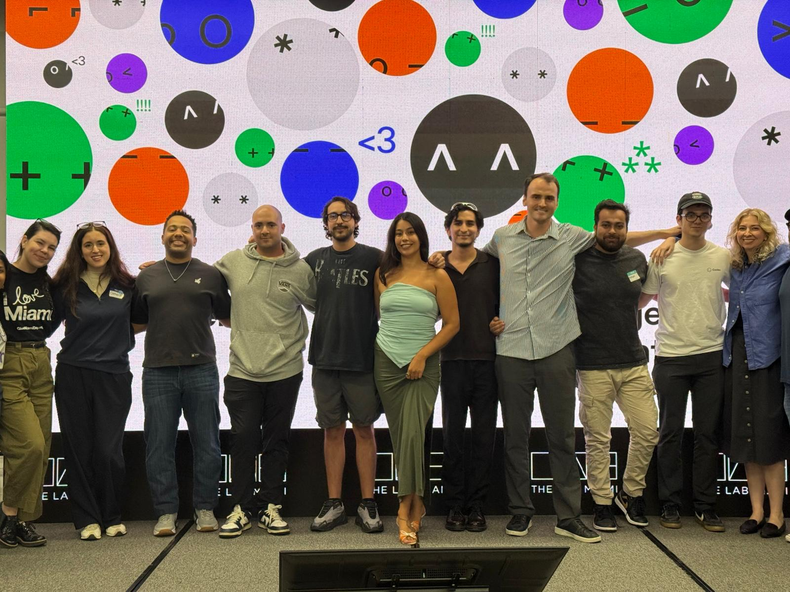

Keeping volunteer hours and requests for help from getting lost
Volunteers share what happened during a visit, but someone still has to record their time and follow up when a family needs help. I built Followkind to keep those steps together, with AI suggesting supply needs and staff reviewing every request.
Select “Explore the fictional demo” to try it without signing in. The demo uses sample data and simulated interactions.
Hours get missed. Families wait for help.
In the supplied challenge, Owen coordinates 40 volunteers at Tidepath Family Alliance. Their updates arrive through texts and group chats, so he spends about four hours a week copying messages into a spreadsheet. Some hours are counted twice, others are missed, and requests for supplies can sit unanswered.
I focused on one complete path, from a volunteer’s update to confirmed hours and a request staff could follow through on. Reporting had to work on a phone without a new app, protect family information and stay simple enough for a part time coordinator.
Tidepath and its people are fictional. The organizers based the challenges on a survey of 14 South Florida nonprofits. I worked from that brief, without conducting my own interviews.
One update, followed through.
Take Maya’s update from her phone to the coordinator’s report. Nothing is sent or saved.
- 1 · Send an update
- 2 · Review the need
- 3 · Follow through
How did your visit go?
No account or new app. Just a short update.
Maya’s update is ready to review.
Delivered groceries today. The family needs diapers.
Supply need identified
“The family needs diapers.”
Check the source. You can edit the title before creating the request.
Enter a request title before confirming.
Receiving a request is the beginning.
Diapers
Demo family A · Supplies team
Let the coordinator know someone is handling this.
Maya · 1 confirmed visit
Confirmed when the coordinator reviewed the update. Resolving the need does not add more hours.The request is resolved. Maya’s original update and confirmed time stay connected to the record.
From a volunteer’s phone to the team’s next step
I organized the workspace around reporting, review, needs and confirmed hours. Each screen gives someone a clear next step. All screenshots use fictional demo data.
A short update, with the hours already attached
Maya opens her personal link, enters her time and shares what happened. The form keeps the family reference and message together so staff can review them without copying a chat into a spreadsheet.
A message like “delivered groceries” gives no duration, so time is required. The AI never fills in missing hours. Photo preview is demo only.

Keep the original messages at the decision point
Coordinators can compare what volunteers actually said before confirming a record. In this shared visit example, James and Maria each report two hours. Linking the reports keeps one visit and all four volunteer hours.
Shared visit review is simulated in the demo. The live AI supply suggestion also shows its supporting quote and lets staff edit the title before approving. If AI is unavailable, staff can review manually.

Give each request a visible next step
Early designs felt like another chat, so I made requests and their statuses the focus. The needs queue shows what the supplies team has accepted and what still needs attention. Acknowledging a request marks it in progress. Staff record the outcome separately, so receiving the message never counts as resolving the need.

Five hours, three volunteers, two visits
The weekly report uses confirmed records. Maya contributes one hour, James two and Maria two. Their time stays intact even though James and Maria share a visit.
Pending hours stay out of the confirmed total. Authorized staff can export a CSV.

Second place, with a working prototype
Followkind placed second at the DevDay Exchange Community Hackathon in Miami, held on November 7 and 8, 2026. I designed the flow and interface, then used Codex to build and deploy it with the OpenAI API, Supabase and Cloudflare Workers.
I tested a fictional visit through live submission, AI review, request resolution and the weekly report. The submitted video used the fictional demo after email sign in hit a sending limit. Testing also revealed hidden AI error messages, so I moved feedback into the review window.
Working live
Personal reporting links, saved updates, AI supply suggestions, staff approval, request tracking and confirmed hours reporting.
Demo only
Shared visit review and photo preview. Sample interactions are clearly labeled and do not change saved records.
What comes next
Test with nonprofit coordinators before real use. Live shared visit handling, private photo uploads and reliable notifications remain future work. No time savings or adoption metrics have been measured.
